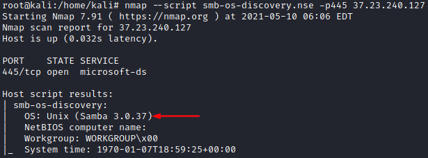

Identify version of Samba
To identify the version of Samba, we can use the nmap
“
smb-os-discovery” script scan on port
445:
root@kali:/# nmap --script smb-os-discovery -p445 192.168.147.197

ShodanHosts with
Samba and
port 445 open on the internet
https://www.shodan.io/search?query=port%3A445+samba+
search for → port:445 samba